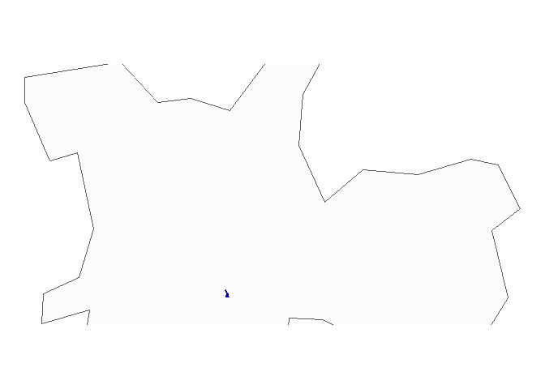

The goal of milton is to …
Installation
You can install the development version of milton from GitHub with:
# install.packages("devtools")
devtools::install_github("tomasbarcellos/milton")Example
o pacote oferece uma série de funções de utilidade para trabalhar com dados georreferenciados.
É possível buscar por endereços e encontrar suas coordenadas geográficas com a função get_addr.
library(milton)
get_addr("Avenida Heróis do Acre")
#> # A tibble: 1 x 2
#> lon lat
#> <dbl> <dbl>
#> 1 -38.5 -3.80A função geopart permite identificar o polígono ao qual uma coordenada (ou ponto) pertence.
Criando dados para usar nos exemplos a seguir.
Com nearplace é possível identificar o local (dado uma lista) mais próximo de um ponto.
min_dist retorna a menor distância entre um ponto e um conjunto de localidades.
Caso de identificacao do setor censitario
Ler shapes
mun <- brazilmaps::get_brmap("City")
cens <- sf::st_read("inst/extdata/setor censitario", "DEINFO_SETOR_CENSITARIO_2010") %>%
sf::st_transform("+proj=longlat +zone=23 +south +ellps=aust_SA +units=m +no_defs") %>%
sf::st_as_sf()
#> Reading layer `DEINFO_SETOR_CENSITARIO_2010' from data source
#> `C:\Users\tomas.barcellos\Documents\projetos\milton-geo\inst\extdata\setor censitario'
#> using driver `ESRI Shapefile'
#> Simple feature collection with 18953 features and 5 fields
#> Geometry type: MULTIPOLYGON
#> Dimension: XY
#> Bounding box: xmin: 313434.5 ymin: 7343753 xmax: 360659.3 ymax: 7416233
#> Projected CRS: SAD69 / UTM zone 23SIdenticar o setor censitario e municipio de um endereco.
coord <- get_addr("Rua vergueiro")
sp <- geopart(coord, mun)
#> old-style crs object detected; please recreate object with a recent sf::st_crs()
#> old-style crs object detected; please recreate object with a recent sf::st_crs()
setor <- geopart(coord, cens)E fazer um mapa.
library(ggplot2)
ggplot(sp) +
geom_sf(fill = "gray99") +
geom_sf(data = setor, col = "darkblue", fill = "darkblue") +
coord_sf(ylim = c(-23.4, -23.6), ) +
theme_void()